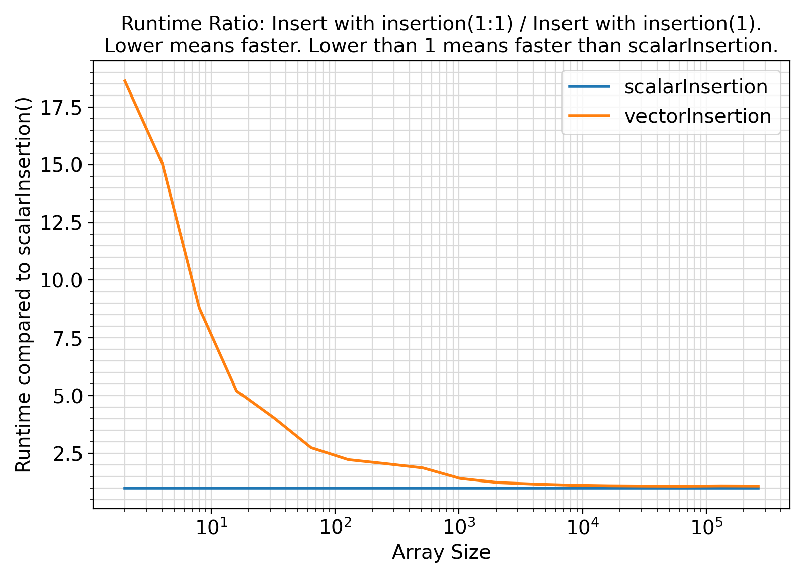
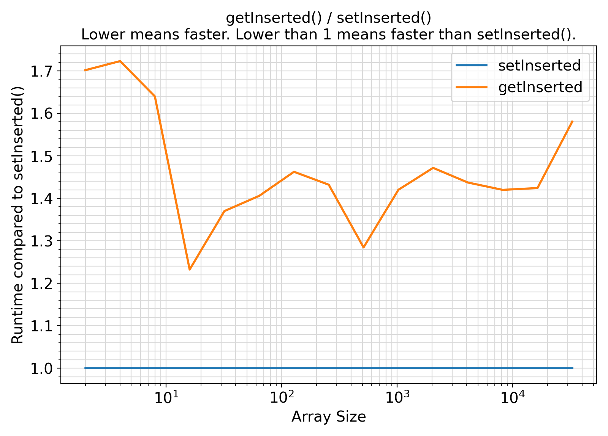

This module contains procedures and generic interfaces for inserting an insertion into the specified locations of an input arrays of various types.
More...
This module contains procedures and generic interfaces for inserting an insertion into the specified locations of an input arrays of various types.
- Benchmarks:
Benchmark :: The runtime performance of setInserted for scalar vs. vector input insertion argument. ⛓
4 use iso_fortran_env,
only:
error_unit
13 integer(IK) :: fileUnit
14 integer(IK) ,
parameter :: NSIZE
= 18_IK
15 integer(IK) ,
parameter :: NBENCH
= 2_IK
16 integer(IK) :: arraySize(NSIZE)
17 logical(LK) :: dummy
= .true._LK
18 integer(IK) ,
allocatable ::
index(:)
19 real(RK) ,
allocatable :: array(:)
20 real(RK) ,
allocatable :: arrayNew(:)
21 real(RK) :: insertion(
1)
22 type(bench_type) :: bench(NBENCH)
24 bench(
1)
= bench_type(name
= SK_
"scalarInsertion", exec
= scalarInsertion , overhead
= setOverhead)
25 bench(
2)
= bench_type(name
= SK_
"vectorInsertion", exec
= vectorInsertion , overhead
= setOverhead)
27 arraySize
= [(
2_IK**isize, isize
= 1_IK, NSIZE )]
29 write(
*,
"(*(g0,:,' '))")
30 write(
*,
"(*(g0,:,' '))")
"scalarInsertion() vs. vectorInsertion()"
31 write(
*,
"(*(g0,:,' '))")
33 open(newunit
= fileUnit, file
= "main.out", status
= "replace")
35 write(fileUnit,
"(*(g0,:,','))")
"arraySize", (
bench(i)
%name, i
= 1, NBENCH)
37 loopOverArraySize:
do isize
= 1, NSIZE
39 write(
*,
"(*(g0,:,' '))")
"Benchmarking with size", arraySize(isize)
40 allocate(array(arraySize(isize)), arrayNew(arraySize(isize)
*2))
41 index
= getRange(
1_IK, arraySize(isize))
47 deallocate(array, arrayNew)
48 write(fileUnit,
"(*(g0,:,','))") arraySize(isize), (
bench(i)
%timing
%mean, i
= 1, NBENCH)
50 end do loopOverArraySize
51 write(
*,
"(*(g0,:,' '))") dummy
52 write(
*,
"(*(g0,:,' '))")
62 subroutine setOverhead()
67 subroutine initialize()
68 call random_number(insertion)
72 dummy
= dummy
.and. insertion(
1)
< 0.5_RK
75 subroutine scalarInsertion()
78 call setInserted(arrayNew, array, insertion(
1), index)
82 subroutine vectorInsertion()
Return a new array arrayNew containing the original array within which the input insertion has been i...
Generate minimally-spaced character, integer, real sequences or sequences at fixed intervals of size ...
Generate and return an object of type timing_type containing the benchmark timing information and sta...
This module contains procedures and generic interfaces for inserting an insertion into the specified ...
This module contains procedures and generic interfaces for generating ranges of discrete character,...
This module contains abstract interfaces and types that facilitate benchmarking of different procedur...
This module defines the relevant Fortran kind type-parameters frequently used in the ParaMonte librar...
integer, parameter RK
The default real kind in the ParaMonte library: real64 in Fortran, c_double in C-Fortran Interoperati...
integer, parameter LK
The default logical kind in the ParaMonte library: kind(.true.) in Fortran, kind(....
integer, parameter IK
The default integer kind in the ParaMonte library: int32 in Fortran, c_int32_t in C-Fortran Interoper...
integer, parameter SK
The default character kind in the ParaMonte library: kind("a") in Fortran, c_char in C-Fortran Intero...
This is the class for creating benchmark and performance-profiling objects.
subroutine bench(sort, arraySize)
Example Unix compile command via Intel ifort compiler ⛓
3ifort -fpp -standard-semantics -O3 -Wl,-rpath,../../../lib -I../../../inc main.F90 ../../../lib/libparamonte_fortran_*_intel* -o main.exe
Example Windows Batch compile command via Intel ifort compiler ⛓
2set PATH=..\..\..\lib;%PATH%
3ifort /fpp /standard-semantics /O3 /I:..\..\..\include main.F90 ..\..\..\lib\libparamonte_fortran_*_intel*.lib /exe:main.exe
Example Unix / MinGW compile command via GNU gfortran compiler ⛓
3gfortran -cpp -ffree-line-length-none -O3 -Wl,-rpath,../../../lib -I../../../inc main.F90 ../../../lib/libparamonte_fortran_*_gnu* -o main.exe
Postprocessing of the benchmark output ⛓
3import matplotlib.pyplot
as plt
9methods = [
"scalarInsertion",
"vectorInsertion"]
11df = pd.read_csv(
"main.out")
17ax = plt.figure(figsize = 1.25 * np.array([6.4,4.6]), dpi = 200)
21 plt.plot( df[
"arraySize"].values
26plt.xticks(fontsize = fontsize)
27plt.yticks(fontsize = fontsize)
28ax.set_xlabel(
"Array Size", fontsize = fontsize)
29ax.set_ylabel(
"Runtime [ seconds ]", fontsize = fontsize)
30ax.set_title(
"Removing array segments with insertion(1) (scalar) vs. insertion(1:1) (vector).\nLower is better.", fontsize = fontsize)
34plt.grid(visible =
True, which =
"both", axis =
"both", color =
"0.85", linestyle =
"-")
35ax.tick_params(axis =
"y", which =
"minor")
36ax.tick_params(axis =
"x", which =
"minor")
44plt.savefig(
"benchmark.scalarInsertion_vs_vectorInsertion.runtime.png")
50ax = plt.figure(figsize = 1.25 * np.array([6.4,4.6]), dpi = 200)
53plt.plot( df[
"arraySize"].values
54 , np.ones(len(df[
"arraySize"].values))
59plt.plot( df[
"arraySize"].values
60 , df[
"vectorInsertion"].values / df[
"scalarInsertion"].values
64plt.xticks(fontsize = fontsize)
65plt.yticks(fontsize = fontsize)
66ax.set_xlabel(
"Array Size", fontsize = fontsize)
67ax.set_ylabel(
"Runtime compared to scalarInsertion()", fontsize = fontsize)
68ax.set_title(
"Runtime Ratio: Insert with insertion(1:1) / Insert with insertion(1).\nLower means faster. Lower than 1 means faster than scalarInsertion.", fontsize = fontsize)
72plt.grid(visible =
True, which =
"both", axis =
"both", color =
"0.85", linestyle =
"-")
73ax.tick_params(axis =
"y", which =
"minor")
74ax.tick_params(axis =
"x", which =
"minor")
75ax.legend ( [
"scalarInsertion",
"vectorInsertion"]
82plt.savefig(
"benchmark.scalarInsertion_vs_vectorInsertion.runtime.ratio.png")
Visualization of the benchmark output ⛓

Benchmark moral ⛓
- The procedures under the generic interface setInserted take both scalar and vector
insertion arguments.
As evidenced by the above benchmark, when the input insertion is vector of length 1, it is much faster, by 4X or more, to pass insertion as a scalar instead of a whole array of length 1.
This benchmark represents the worst-case scenario.
Note that this benchmark is likely irrelevant to inserting substrings to Fortran strings.
Benchmark :: The runtime performance of getInserted vs. setInserted ⛓
4 use iso_fortran_env,
only:
error_unit
13 integer(IK) :: fileUnit
14 integer(IK) ,
parameter :: NSIZE
= 15_IK
15 integer(IK) ,
parameter :: NBENCH
= 2_IK
16 integer(IK) :: arraySize(NSIZE)
17 logical(LK) :: dummy
= .true._LK
18 real(RK) :: insertion
= 1._RK
19 real(RK) ,
allocatable :: array(:), arrayNew(:)
20 integer(IK) ,
allocatable ::
index(:)
21 type(bench_type) :: bench(NBENCH)
23 bench(
1)
= bench_type(name
= SK_
"setInserted", exec
= setInserted , overhead
= setOverhead)
24 bench(
2)
= bench_type(name
= SK_
"getInserted", exec
= getInserted , overhead
= setOverhead)
26 arraySize
= [(
2_IK**isize, isize
= 1_IK, NSIZE )]
28 write(
*,
"(*(g0,:,' '))")
29 write(
*,
"(*(g0,:,' '))")
"setInserted() vs. getInserted()"
30 write(
*,
"(*(g0,:,' '))")
32 open(newunit
= fileUnit, file
= "main.out")
34 write(fileUnit,
"(*(g0,:,','))")
"arraySize", (
bench(i)
%name, i
= 1, NBENCH)
36 loopOverArraySize:
do isize
= 1, NSIZE
38 write(
*,
"(*(g0,:,' '))")
"Benchmarking with size", arraySize(isize)
40 index
= getRange(
1_IK, arraySize(isize))
41 allocate(arrayNew(arraySize(isize)
+size(index)))
42 allocate(array(arraySize(isize)),
source = 1._RK)
46 deallocate(array, arrayNew)
48 write(fileUnit,
"(*(g0,:,','))") arraySize(isize), (
bench(i)
%timing
%mean, i
= 1, NBENCH)
50 end do loopOverArraySize
51 write(
*,
"(*(g0,:,' '))") dummy
52 write(
*,
"(*(g0,:,' '))")
62 subroutine setOverhead()
67 subroutine initialize()
68 call random_number(insertion)
72 dummy
= dummy
.and. arrayNew(
1)
== 0.5_RK
75 subroutine setInserted()
79 call setInserted(arrayNew, array, insertion, index, positive
= .true._LK, sorted
= .true._LK)
84 subroutine getInserted()
88 arrayNew(:)
= getInserted(array, insertion, index, positive
= .true._LK, sorted
= .true._LK)
Generate and return a new array containing the original array within which the input insertion has be...
Example Unix compile command via Intel ifort compiler ⛓
3ifort -fpp -standard-semantics -O3 -Wl,-rpath,../../../lib -I../../../inc main.F90 ../../../lib/libparamonte_fortran_*_intel* -o main.exe
Example Windows Batch compile command via Intel ifort compiler ⛓
2set PATH=..\..\..\lib;%PATH%
3ifort /fpp /standard-semantics /O3 /I:..\..\..\include main.F90 ..\..\..\lib\libparamonte_fortran_*_intel*.lib /exe:main.exe
Example Unix / MinGW compile command via GNU gfortran compiler ⛓
3gfortran -cpp -ffree-line-length-none -O3 -Wl,-rpath,../../../lib -I../../../inc main.F90 ../../../lib/libparamonte_fortran_*_gnu* -o main.exe
Postprocessing of the benchmark output ⛓
3import matplotlib.pyplot
as plt
9methods = [
"setInserted",
"getInserted"]
11df = pd.read_csv(
"main.out")
17ax = plt.figure(figsize = 1.25 * np.array([6.4,4.6]), dpi = 200)
21 plt.plot( df[
"arraySize"].values
26plt.xticks(fontsize = fontsize)
27plt.yticks(fontsize = fontsize)
28ax.set_xlabel(
"Array Size", fontsize = fontsize)
29ax.set_ylabel(
"Runtime [ seconds ]", fontsize = fontsize)
30ax.set_title(
"setInserted() vs. getInserted()\nLower is better.", fontsize = fontsize)
34plt.grid(visible =
True, which =
"both", axis =
"both", color =
"0.85", linestyle =
"-")
35ax.tick_params(axis =
"y", which =
"minor")
36ax.tick_params(axis =
"x", which =
"minor")
44plt.savefig(
"benchmark.getInserted_vs_setInserted.runtime.png")
50ax = plt.figure(figsize = 1.25 * np.array([6.4,4.6]), dpi = 200)
53plt.plot( df[
"arraySize"].values
54 , np.ones(len(df[
"arraySize"].values))
59plt.plot( df[
"arraySize"].values
60 , df[
"getInserted"].values / df[
"setInserted"].values
64plt.xticks(fontsize = fontsize)
65plt.yticks(fontsize = fontsize)
66ax.set_xlabel(
"Array Size", fontsize = fontsize)
67ax.set_ylabel(
"Runtime compared to setInserted()", fontsize = fontsize)
68ax.set_title(
"getInserted() / setInserted()\nLower means faster. Lower than 1 means faster than setInserted().", fontsize = fontsize)
72plt.grid(visible =
True, which =
"both", axis =
"both", color =
"0.85", linestyle =
"-")
73ax.tick_params(axis =
"y", which =
"minor")
74ax.tick_params(axis =
"x", which =
"minor")
75ax.legend ( [
"setInserted",
"getInserted"]
82plt.savefig(
"benchmark.getInserted_vs_setInserted.runtime.ratio.png")
Visualization of the benchmark output ⛓

Benchmark moral ⛓
- The procedures under the generic interface getInserted are functions while the procedures under the generic interface setInserted are subroutines.
From the benchmark results, it appears that the functional interface performs slightly less efficiently than the subroutine interface.
The sole apparent reason for this performance loss seems to be the extra copy of the result to the allocatable arrayNew on return from the function.
Note that this benchmark does not even include the cost of repeated reallcations, that is, the allocation of arrayNew happen only once in all tests.
- Note that this benchmark considers the worst-case scenario where
insertion must be inserted at all positions of the input array.
- Test:
- test_pm_arrayInsert
Final Remarks ⛓
If you believe this algorithm or its documentation can be improved, we appreciate your contribution and help to edit this page's documentation and source file on GitHub.
For details on the naming abbreviations, see this page.
For details on the naming conventions, see this page.
This software is distributed under the MIT license with additional terms outlined below.
-
If you use any parts or concepts from this library to any extent, you must acknowledge the usage by citing the relevant publications of the ParaMonte library.
-
If you regenerate any parts/ideas from this library in a programming environment other than those currently supported by this ParaMonte library (i.e., other than C, C++, Fortran, MATLAB, Python, R), you must also ask the end users to cite this original ParaMonte library.
- Copyright
- Computational Data Science Lab
- Author:
- Fatemeh Bagheri, Wednesday 12:20 AM, October 13, 2021, Dallas, TX